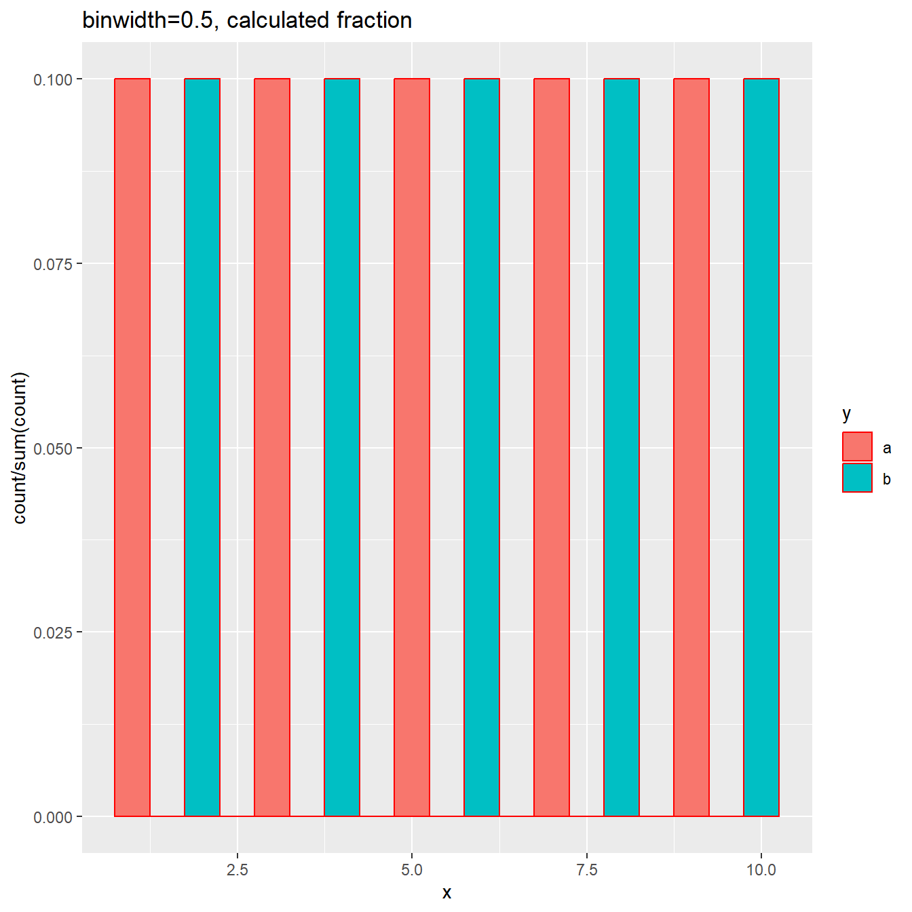

library(knitr)
opts_chunk$set(echo=T, warning=F, fig.width=7, fig.height=7, fig.path="static/")
library(ggplot2)## Warning: package 'ggplot2' was built under R version 4.2.3ggplot2 has been a great tool for making
plots. Today, I would like to talk about histogram. It is straight forward
to make a histogram with geom_histogram(), but not so when one wants to use
fractions instead of counts as values on the y-axis, especially when data are
separated into groups. Let’s dive in.
First, let’s generate some fake data.
x<-1:10
y<-rep(c("a","b"), times=5)
dat<-data.frame(x,y)This dataset contains only 10 values without duplicates, and they are divided
into two groups a and b labelled by variable x.
plt<-ggplot(dat, aes(x=x)) + geom_histogram(binwidth = 1, color="red", fill="yellow")
plt + ggtitle("binwidth=1, count")Here we specified binwidth=1, so there are 10 bins and each bin is expected to have only 1 count, and this is exact what we observed. Now let’s try a different binwidth, say 0.5. This will create 20 bins, but half of them will be empty.
plt<-ggplot(dat, aes(x=x)) + geom_histogram(binwidth = 0.5, color="red", fill="yellow")
plt + ggtitle("binwidth=0.5, count")If we use fraction, we expect each fraction is being 0.1, because there are
only 10 values and each non-empty bin has 1 value. To do so, we can use
the function after_stat(density*width), where the density is the density
value in each bin, and width is the binwidth.
plt<-ggplot(dat, aes(x=x)) + geom_histogram(aes(y=after_stat(density*width)), binwidth = 0.5, color="red", fill="yellow")
plt + ggtitle("binwidth=0.5, fraction")The plot shows up as expected and each fraction is 0.1.
Good, now let’s introduce groups.
plt<-ggplot(dat, aes(x=x, fill=y)) + geom_histogram(aes(y=after_stat(density*width)), binwidth = 0.5, color="red")
plt + ggtitle("binwidth=0.5, fraction")The two groups are filled in different colors, and the fraction in each bin is 0.2. This makes sense, because in each group, there are only 5 values and each non-empty bin has 1 value, accounting 0.2 of the total 5.
On the internet, there is another way to calculate fractions using after_stat(count),
which works for cases without groups, but not for histograms with groups.
Here we can see it:
plt<-ggplot(dat, aes(x=x, fill=y)) + geom_histogram(aes(y=after_stat(count/sum(count))), binwidth = 0.5, color="red")
plt + ggtitle("binwidth=0.5, calculated fraction")
As you can see, each bin has fraction 0.1. This is because the sum(count) gives
the total number, not the total per group.
Another way to compare the distributions of multiple groups is to use density plot, as shown below:
# a bit change to update figures
plt<-ggplot(dat, aes(x=x, fill=y)) + geom_density(alpha=0.5)
plt + ggtitle("density plot")Happy plotting :smile: